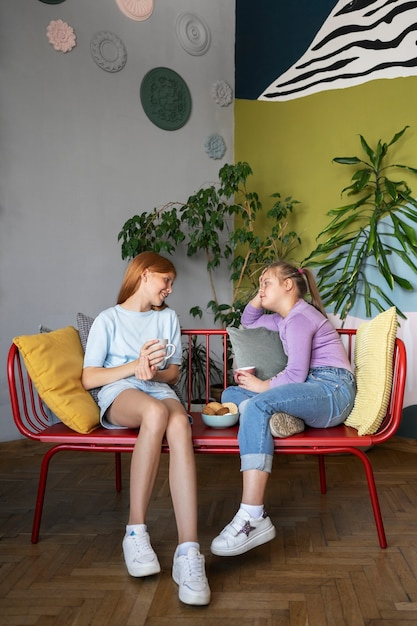

Colour can do more than make a room look fresh. It can highlight architectural details, create a sense of calm or energy, and make a home feel personal. The most successful schemes are not necessarily the boldest; they are the ones that suit the space and the people who live in it.

Before choosing paint, notice what is already there. Flooring, brickwork, timber, stone, tiles and large pieces of furniture all contribute colour, even when they seem neutral. Identify the tones you want to keep, then choose shades that sit comfortably alongside them.
Consider the room’s natural light, too. Its direction, the size of the windows and the time of day can all affect how a colour appears. In an English home, where daylight can vary considerably between rooms and seasons, a shade that looks warm in a bright space may feel quite different in a darker one. Test samples on more than one wall and look at them at different times of day before deciding.
A home can include several colours without feeling disjointed. Choose a small group of shades that work together, then vary how they are used from room to room. A quiet background colour can provide continuity, while deeper or brighter tones add distinction in selected spaces.
Undertones matter. A grey with a warm, earthy base may sit well with natural timber, while a cooler grey can feel more at home alongside crisp whites and blue-toned details. If colours seem almost right but not quite, compare them in the room rather than relying on a paint-card name or the way they look in a shop.
Think about how each room is used. Soft, muted shades can help a bedroom feel restful, while a richer colour in a dining area or hallway can create a stronger sense of welcome. These are starting points, not rules: a favourite vivid colour may be exactly what makes a quiet room feel individual.
You can also use colour to draw attention to features. Painting a door, alcove or built-in shelf in a contrasting shade gives it definition. Using related tones on walls and woodwork can make details feel more subtle and the overall scheme more unified.
If a strong colour feels daunting, introduce it in a contained way. A single wall, painted furniture, artwork, cushions or a lampshade can provide character without dominating the room. Repeat the colour elsewhere in smaller amounts to make the choice feel intentional.
For a more confident look, consider using a deep shade across a whole room rather than limiting it to one wall. Check the effect with your furniture and lighting, and remember that sheen can change how a finish looks. Test both colour and finish before committing.
A characterful home does not need to follow a fixed palette or current trend. Choose colours that connect with objects, memories and materials you enjoy living with. When each shade has a reason for being there—and the rooms relate to one another—the result can feel expressive without becoming busy.
Take time to test, compare and live with your options. A thoughtful colour scheme grows from the particular qualities of a home, not from a formula.
Please review the full privacy policy to understand how information submitted through this website may be handled. The details of data collection, use, storage and your choices should be set out in the complete policy. Read the Privacy Policy